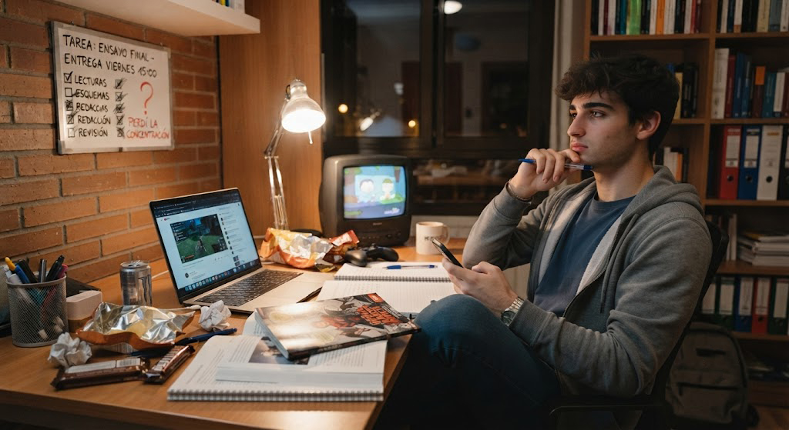
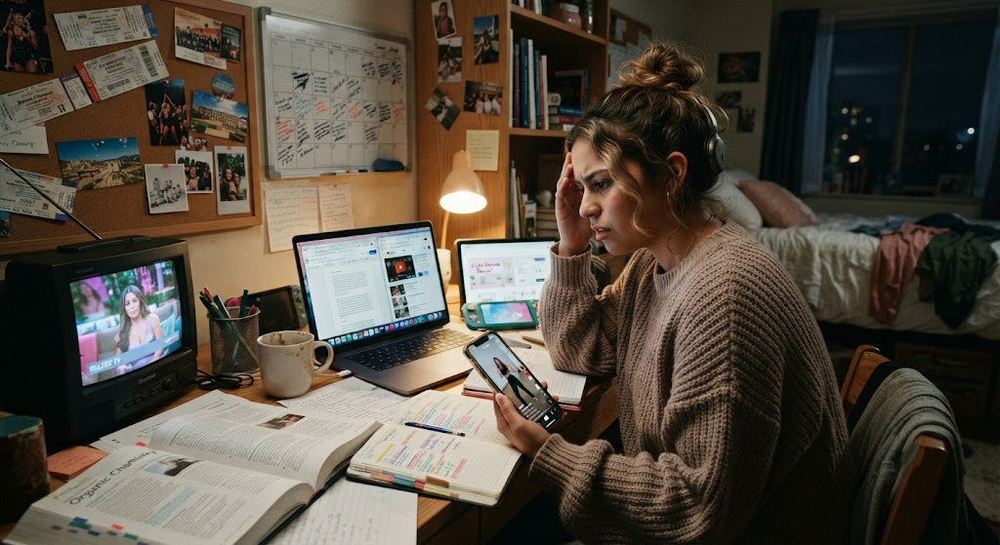

Introducción
Todos hemos dicho alguna vez "empiezo mañana". Sin darnos cuenta, ese mañana se convierte en una semana, luego en un mes y finalmente en un problema mucho más grande. La procrastinación afecta a millones de estudiantes en todo el mundo y es una de las principales razones por las que muchas metas académicas nunca llegan a cumplirse.
La buena noticia es que procrastinar no significa ser perezoso. En la mayoría de los casos es simplemente una mala gestión de nuestras emociones, del tiempo y de nuestros hábitos. En esta guía aprenderás cómo recuperar el control de tu estudio paso a paso.

¿Qué es procrastinar?
La procrastinación consiste en retrasar voluntariamente una tarea importante para realizar otra actividad menos relevante pero más agradable en ese momento.
No es simplemente "dejar todo para después". Se trata de un comportamiento que suele estar relacionado con emociones como:
- Miedo al fracaso.
- Ansiedad.
- Perfeccionismo.
- Falta de motivación.
- Estrés.
- Sobrecarga de tareas.
"No necesitas sentir motivación para empezar. Muchas veces la motivación aparece después de comenzar."
— EnfocaT¿Por qué procrastinamos?
Nuestro cerebro siempre busca ahorrar energía. Cuando una actividad parece difícil, aburrida o estresante, preferimos hacer algo que produzca satisfacción inmediata, como revisar redes sociales, ver videos o responder mensajes.
Lo que ocurre en tu cerebro
Las recompensas rápidas generan una liberación inmediata de dopamina, haciendo que nuestro cerebro prefiera actividades cortas y entretenidas antes que tareas importantes.

¿Qué consecuencias tiene procrastinar?
Aunque al principio parezca inofensivo, procrastinar constantemente puede afectar tanto el rendimiento académico como el bienestar personal.
📉 Bajo rendimiento
Las tareas se acumulan y la calidad del trabajo disminuye.
😰 Estrés
La presión aumenta cuando se acerca la fecha límite.
😴 Cansancio
Muchas personas terminan trasnochando para cumplir con sus responsabilidades.
💔 Desmotivación
Posponer constantemente genera culpa y disminuye la confianza en uno mismo.
5 estrategias para dejar de procrastinar
1️⃣ Divide las tareas grandes
No pienses en terminar todo el proyecto. Concéntrate en completar únicamente el siguiente paso.
2️⃣ Usa la Técnica Pomodoro
Trabaja durante 25 minutos completamente concentrado y luego descansa 5 minutos.
3️⃣ Elimina distracciones
Silencia las notificaciones, aleja el celular y mantén limpio tu espacio de estudio.
4️⃣ Define una meta diaria
Antes de comenzar responde una sola pregunta: ¿Qué quiero terminar hoy?
5️⃣ Recompensa tus avances
Después de completar una sesión de estudio date un pequeño descanso o realiza una actividad que disfrutes.
💡 Consejo EnfocaT
No busques motivación. La disciplina aparece cuando conviertes pequeñas acciones en hábitos diarios. Empieza aunque no tengas ganas.
Errores que debes evitar
- ❌ Esperar sentir motivación.
- ❌ Estudiar con el celular al lado.
- ❌ Intentar hacer varias tareas al mismo tiempo.
- ❌ No planificar el día.
- ❌ Pensar únicamente en el resultado final.
Resumen
La procrastinación no desaparece de un día para otro. Sin embargo, desarrollar hábitos como planificar el estudio, dividir las tareas y controlar las distracciones hará que cada día sea más fácil comenzar. Recuerda: la acción genera motivación, no al contrario.